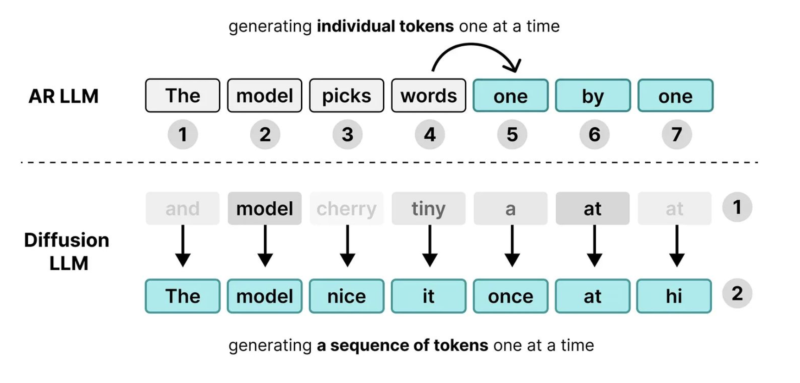
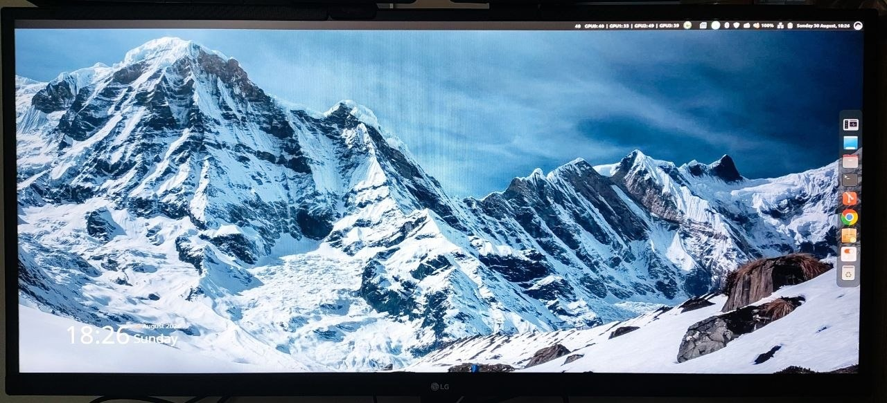
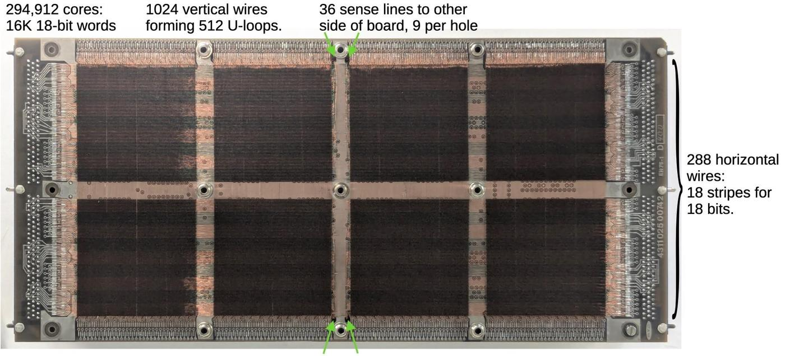

THE FRONT PAGE
EDITOR'S NOTE: A busy day in the latent space. #Judgment and craft
BREAKING VECTORS
Anthropic Re-anchors the Base: A Permanent 25% Increase That Is Actually a 17% Cut
Anthropic announced it is permanently raising Claude Code's standard weekly usage limits by 25%—which, because it replaces a temporary 50% promotional boost, leaves engineers with 17% less compute than they have right now. The trade-off is clear: as corporate infrastructure budgets buckle under sustained agentic loops, developers are being quietly forced to treat prompt efficiency as a core discipline rather than an afterthought.
MODEL ARCHITECTURES

Diffusion Models Offer Non-Sequential Alternative to Autoregressive Text Generation
Adapting continuous noise processes to discrete text allows models to refine whole blocks of tokens in parallel, though at the expense of higher sampling latency during inference. This departure from strict left-to-right decoding reintroduces flexible planning into text synthesis, even if practical compute costs remain steep.
LAB OUTPUTS

A Custom Framebuffer Driver Brings Dual-Display HDMI to Ancient SM750 Hardware
Independent developers have written a bare-metal Linux driver to force Silicon Motion’s legacy SM750 GPU to drive dual HDMI outputs at non-standard resolutions, bypassing years of abandoned vendor code. It is a reminder that hardware longevity relies on brute-force reverse engineering, though reliance on out-of-tree framebuffer drivers leaves system stability on thin ice.
INFERENCE CORNER

When Bit Flip Insulation Meant Hand-Woven Copper: Spacelab’s Core Memory Examined
An analysis of CIMSA’s 1980 core memory module highlights an era when radiation tolerance depended on physical ferrite rings and grueling mechanical assembly rather than modern software abstraction. The tradeoff was absolute structural reliability at the expense of crippling limits on compute density.